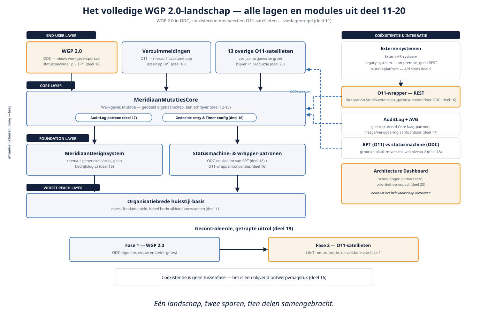

Deel 21 — Capstone: WGP 2.0 als landschapsontwerp
Slidedeck · Ductus-cursus OutSystems · Niveau 2 — Professional · deel 21 van 30 · 11 slides
Slide 1 — Title: OutSystems: Vakbekwaam
OutSystems: Vakbekwaam
Deel 21 — Capstone: WGP 2.0 als landschapsontwerp
Slide 2 — Bullets: Tien delen, één landschap
Tien delen, één landschap
- Modules met eigenaarschap → performant en veilig op schaal
- Verbonden intern en extern → asynchroon waar nodig
- Beheerst uitgerold → bewust beheerd tegen technische schuld

Slide 3 — Section: De opdracht
De opdracht
Slide 4 — Bullets: Checklist: landschapsontwerp compleet
Checklist: landschapsontwerp compleet
- Architecture Canvas, correct gelaagd
- MeridiaanMutatiesCore + MeridiaanDesignSystem werkend gedeeld
- Expliciete coëxistentiestrategie O11/ODC
- Beveiliging + audit aantoonbaar AVG-conform
- Lifecycle-opzet met rollback-scenario
- Technische-schuld-rapportage met prioritering
Slide 5 — Section: De verdediging: vier rollen
De verdediging: vier rollen
Slide 6 — Bullets: Drie bekend, één nieuw
Drie bekend, één nieuw
- Consument — gebruiksgemak
- Beheerder — beheersbaarheid
- Stuurgroeplid — zakelijke afweging
- Privacyfunctionaris — AVG-naleving, concreet en uitvoerbaar
Slide 7 — Statement: Niet: is elke module perfect.
Niet: is elke module perfect.
Wél: hangt het landschap samen.
Slide 8 — Table: Rubric — vijf criteria
Rubric — vijf criteria
| Criterium | Waar het om gaat |
|---|---|
| Architecturale samenhang | Vierlagenregel consequent toegepast |
| Coëxistentiestrategie | Heldere O11/ODC-verdeling, beargumenteerd |
| Beveiliging en AVG | Concreet, uitvoerbaar (bijv. inzageverzoek) |
| Omgaan met falen | Rollback mét complicaties benoemd |
| Zelfkritische blik op schuld | Prioritering op impact |
Slide 9 — Opdracht: Verdediging
Verdediging
30 minuten: 15 toelichting, 15 vragen
→ Werkboek, voorbereidingsvragen per rol
Slide 10 — Bullets: Kernpunten niveau 2
Kernpunten niveau 2
- Van app naar landschap: eigenaarschap, lagen, gedeelde libraries
- Grootste platformverschil: BPT (alleen O11) vs zelfgebouwde statusmachine (ODC)
- Coëxistentie is casusrealiteit — geen tussenfase, maar een blijvend ontwerpvraagstuk
- Technische schuld: meetbaar maken en prioriteren op impact
Slide 11 — Section: Niveau 3: Portfoliobesluiten, migratie, leiderschap
Niveau 3: Portfoliobesluiten, migratie, leiderschap